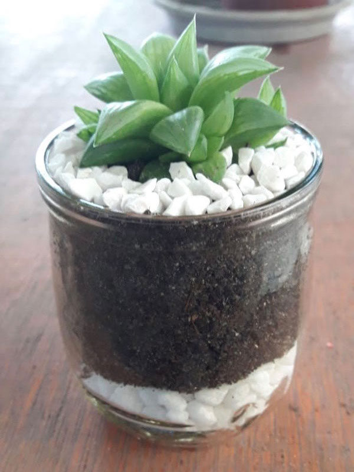
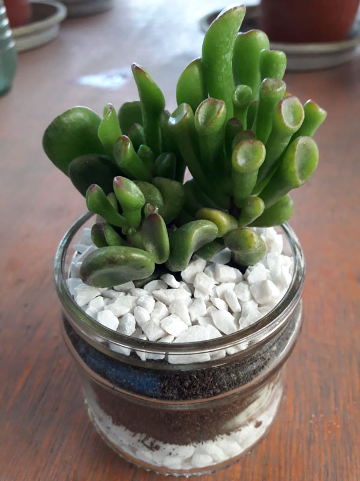
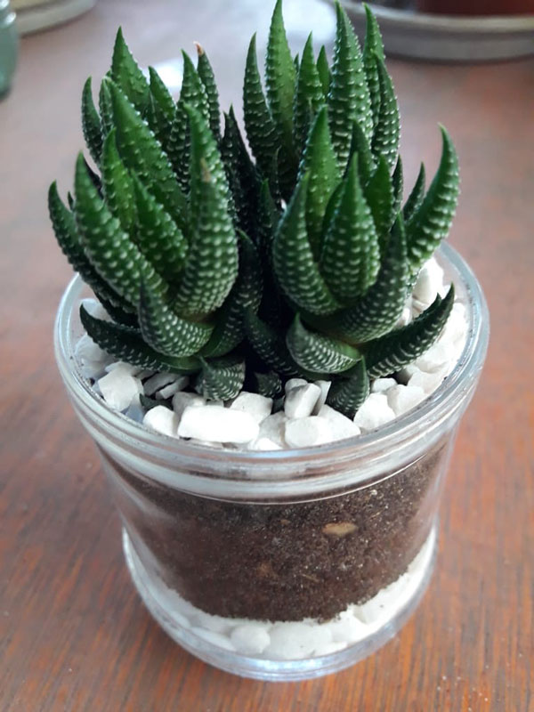
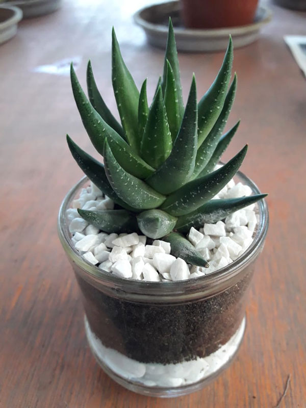
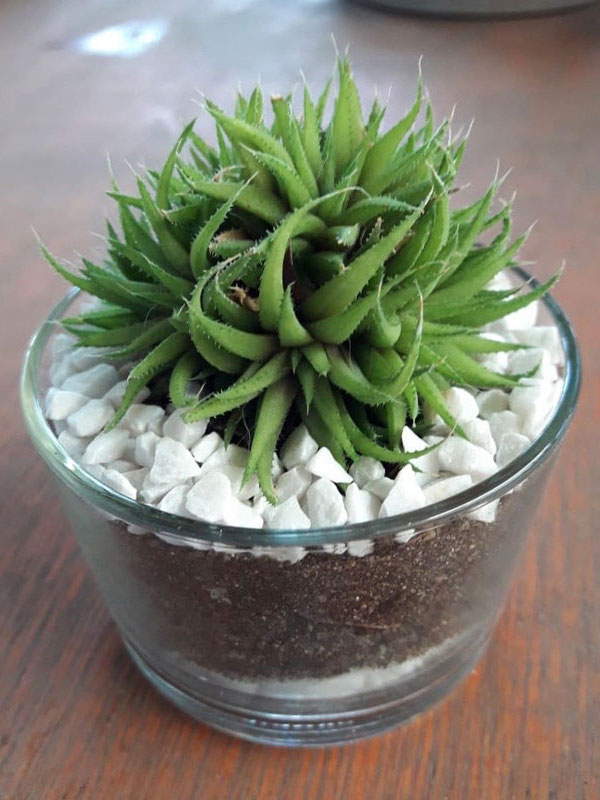
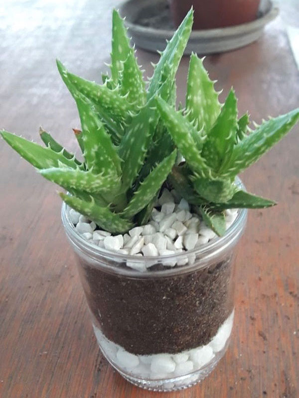
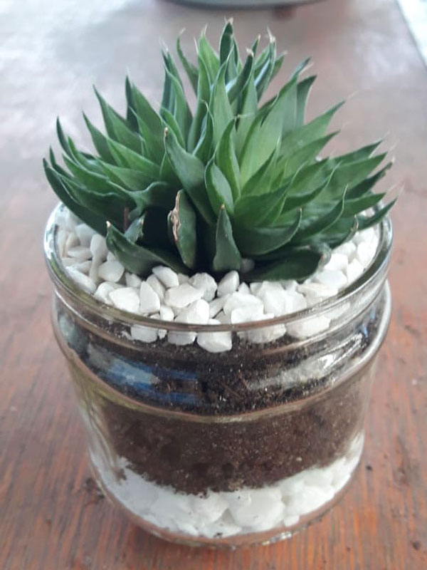
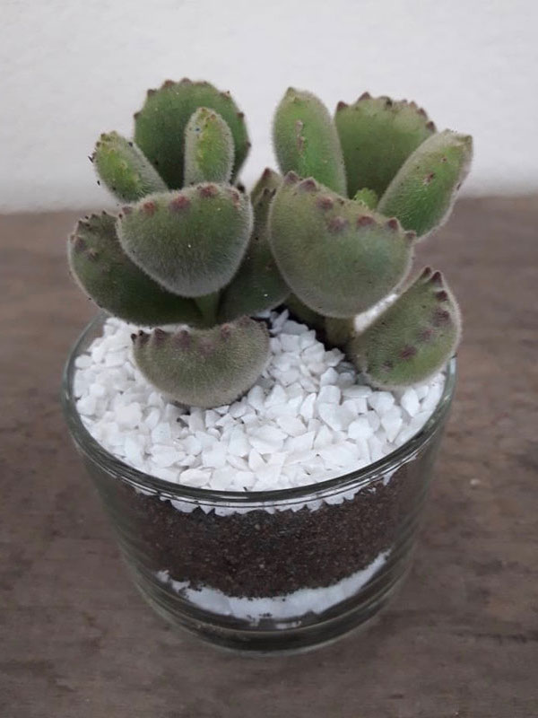

Curiosidades

Suculenta Haworthia Turgida
Também conhecida como Planta de vidraça.
Nome científico: Haworthia Turgida.
Família: Asphodelaceae.
Origem: Província do Cabo Ocidental da África do Sul.
Possuem folhas bem gordinhas verde claras com listinhas brancas. Necessitam de ambientes com meia sombra ou sol durante poucas horas do dia, de preferência pela manhã. Regas moderadas de uma vez por semana no inverno e até 2 ou 3 vezes por semana no verão.

Suculenta Orelha de Shrek
Nome científico: Crassula Ovata Gollum.
Família: Crassulaceae.
Origem: África do Sul.
Essas suculentas possuem folhas tubulares com um verde brilhante. Geralmente apresentam uma mancha avermelhada na parte superior e podem chegar aos 80 cm de altura. Vai bem em ambientes com sol e meia sombra. Devido ao seu formato ela conhecida como suculenta Orelha de Shrek.

Suculenta Haworthia Coarctata
Nome científico: Haworthia Coarctata.
Família: Xanthorrhoeaceae.
Origem: África do Sul.
Suas folhas possuem um tom verde bem escuro e apresentam delicadas marcações brancas em forma de pintas. Quando a planta é cultivada em ambientes mais ensolarados, tende a adquirir uma coloração mais avermelhada. Esta suculenta vai formando touceiras com vários indivíduos, que brotam lateralmente a partir da base da planta mãe. O excesso de regas é o seu maior inimigo.

Suculenta Haworthia Coarctata Greenii
Nome científico: Haworthia Coarctata Greenii.
Família: Xanthorrhoeaceae.
Origem: África do Sul.
É uma planta suculenta de crescimento lento que pode chegar até 20 cm de altura. São normalmente verde-escuros, mas às vezes adquirem um tom vermelho quando sob a luz do sol. Assim como a Haworthia Coarctata, também possuem pintas brancas em suas folhas bem rígidas.

Suculenta Haworthia Chloracantha Denticulifera
Nome científico: Haworthia Chloracantha Denticulifera.
Família: Asphodelaceae.
Origem: Província do Cabo Ocidental da África do Sul.
É uma suculenta de cor verde escuro ou verde arroxeado e possuem espinhos finos nas folhas. É uma planta de compensação livre, que às vezes forma pequenos aglomerados nas localidades. São de fácil cultivo e manutenção relativamente baixa, o que os torna uma boa planta de casa.

Suculenta Aloe Juvenna
Nome científico: Aloe Juvenna.
Família: Asphodelaceae.
Origem: Quênia.
É uma suculenta portadora das mesmas características e propriedades medicinais e cosméticas da babosa (Aloe vera), sendo que em tamanho bem menor. É de fácil cultivo e cresce até os 30cm. Suas folhas são de cor verde salpicadas de branco e mudam para um tom alaranjado ou até mesmo vermelho amarronzado quando expostas ao sol pleno. Necessitam de pouca água.

Suculenta Haworthia Marumiana
Nome científico: Haworthia Marumiana.
Família: Xanthorrhoeaceae.
Origem: África do Sul.
Pequena suculenta formando moita, com folhas de cor verde-oliva que têm espinhos de coloração mais clara. É uma planta que atinge um tamanho de 2 a 20 cm de altura. Pode ser encontrada a uma altitude de até 1000 metros na África do Sul. É de fácil cultivo, requer pouca manutenção e o seu é crescimento relativamente rápido.

Suculenta Pata de Urso
Nome científico: Cotyledon Tomentosa.
Família: Crassulaceae.
Origem: Província do Cabo da África do Sul.
É uma das minhas preferidas. Possuem um formato de pata bem gordinhas, peludinhas e com vários dentinhos em tom vermelho escuro nas pontas. Não é a toa que é conhecida como suculenta Pata de Urso. Pode ser cultivada em casa, porém necessita de claridade ou sol na parte da manhã ou a tardezinha. Regue sempre que estiver seco.